Solving Problems by Searching
Objectives
1. Understand basics of search-based
problems
2. Examine algorithms for uninformed search strategies
(breadth-first, depth-first, uniform cost)
3. Examine algorithms for informed search strategies (greedy and
A*)
4. Understand admissable heuristics
5. Compare and contrast uninformed and informed search strategies
Overview
We will first look at a specific type of goal-based agent:
A problem-solving agent is
a type of goal-based agent that finds sequences of actions that lead
to desirable (i.e. goals) outcomes.
Many classic AI tasks can be described as a search problem:
- navigation
- puzzles
- scheduling
- games
Example - Romania
Below is a map of Romania with the distances between various cities.
An agent is in Romania. Performance measures include many (enjoy the
culture, eat good food, etc.) However, the agent is in Arad and
needs to be in Bucharest by a certain date.
A goal-based agent will perform the following:
1. Formulate a goal. (i.e.
Get to Bucharest)
2. Formulate a problem.
Decide what states and actions to consider to achieve the goal.
(i.e. states = various cities;
actions = driving between cities.)
The agent then determines a sequence of actions that achieve the
goal. A search looks for
such a sequence. (i.e. the sequence of cities from Arad to
Bucharest.)
Algorithmically:
Problem
-->
Search Algorithm --> Solution (a sequence of
actions)
Some assumptions:
- The environment is static.
- The environment is fully observable.
- The environment is discrete.
- The environment is deterministic.
A search problem is defined by four components:
1. Initial State. (i.e.
Arad)
2. Successor Function.
S(Arad) = {Zerind, Timisoara, Sibiu}
3. Goal Test. (i.e. current
state == Bucharest)
4. Path Cost. A numeric
"cost" of each path.
A solution is a path from
the initial state to the goal state.
Solution quality is measured by the path cost
function.
An optimal solution
has the lowest path cost of all solutions. |
Examples
We can formalize searches in a state
space as a directed graph.
Eight Puzzle
Initial State
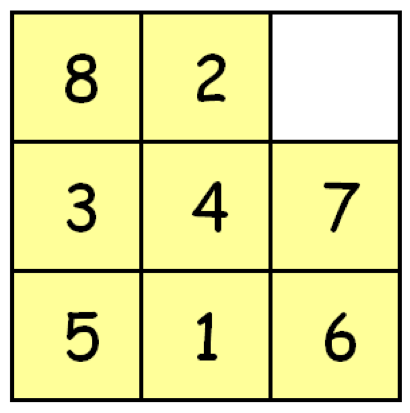
|
Goal State
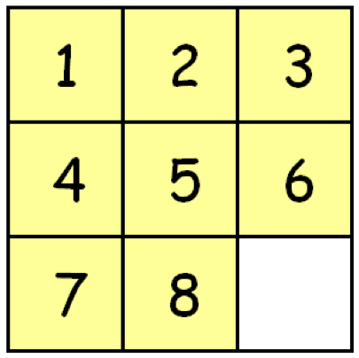
|
States: This can be any
arrangement of the tiles on a 3x3 board.
Initial State: This can be
any state.
Successor Function: The
actions are Left, Right, Up, and Down. Graphically, some possible
successor functions include:
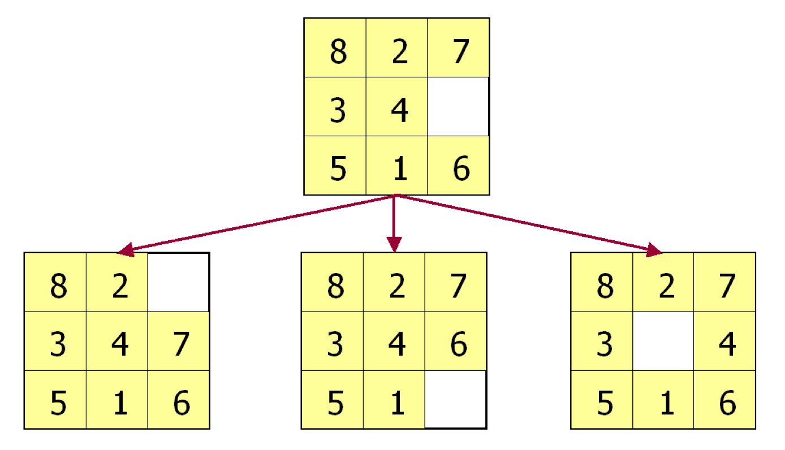
Goal Test: Checks whether
the current state matches a goal configuration. (Note, there are
multiple possible configurations.)
Path Cost: Each step costs 1
unit. Path cost is the total number of steps in the path.
It is important to note whether we care about a solution (at all) or
do we care about an optimal solution?
Remove 5 Sticks Problem
Remove exactly 5 of the 17 sticks so that the result forms exactly 3
squares
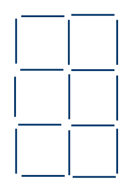
Working with a partner:
How could this be stated as a search problem? (States? Initial
State? Successor Function? Goal Test? Path Cost?)
Searching for Solutions
Thus far, we have only formulated problems. We haven't yet
identified how to solve them!
Search Trees
Our solutions will involve constructing search trees. The search
tree for the route-finding problem:
Initially:
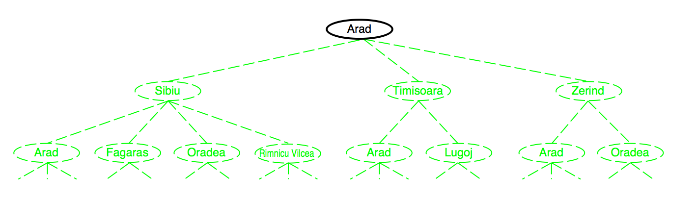
Now expand the current state:
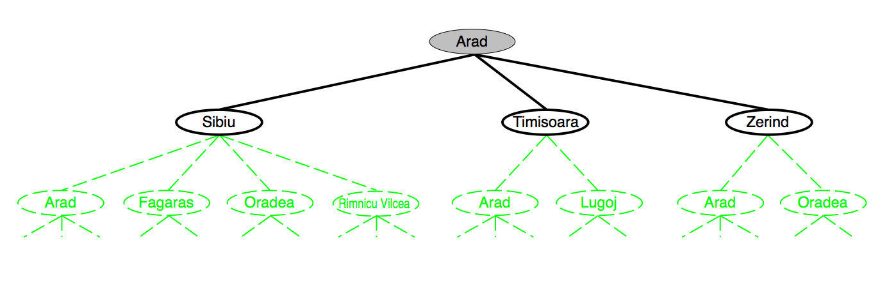
We could then expand to
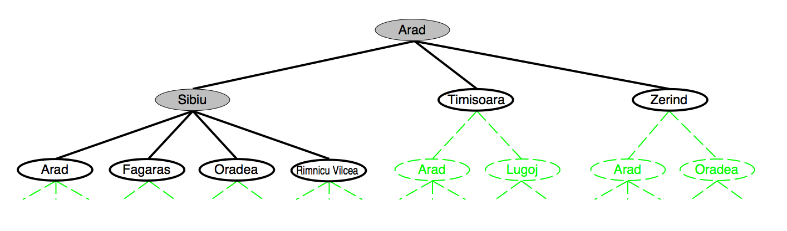
Sizes of State Spaces
Problem
|
Number of Nodes
|
8 Puzzle
|
9!/2
|
Tic Tac Toe
|
39
|
Rubik's Cube
|
106
|
Checkers
|
1040
|
The size of the state spaces can get quite large, so we ideally want
to strategize how we approach the problem.
*** A search strategy
determines which states to expand.
The frontier refers to the
set of nodes that have been generated, but not yet expanded. Each
element of the frontier is a leaf node. The search strategy selects
a node from this set to expand.
What is the frontier from the above figure?
(Note - fringe is a
synonymous term for frontier)
A generalized search algorithm:
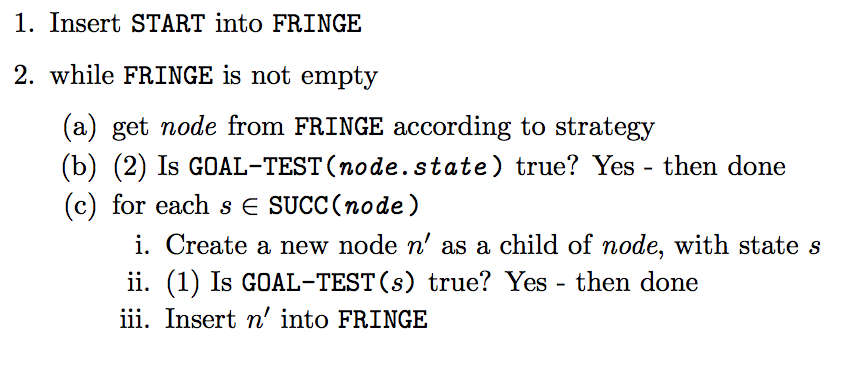
As always, be careful .....
Nodes
!=
State. A node is a data structure used for representing
the search tree. A state represents the current status of the
environment.
State
Space
!= Search Tree. With the route-finding problem, there are
a finite number of states (20 - one for each city), but an
infinite number of paths in the state space. The search tree can
have an infinite number of nodes.
Evaluation
Search Strategies are evaluated according to the following criteria:
- Completeness. Does the
strategy find a solution when one exists?
- Optimality. Does the
strategy find the optimal solution?
- Time complexity. How long
does the strategy take? (Big-oh notation.)
- Space complexity. How
much memory is required to perform the search?
|
Graphs
The representation of
states is maintained in a graph.
|
Uninformed Search Strategies
These are known as uninformed searches because they can only
generate and follow successors and check if they are in a goal
state. These searches have no
ability to determine if one path is more promising than another.
Breadth-First Search
We use a breadth-first strategy to find a specified node.
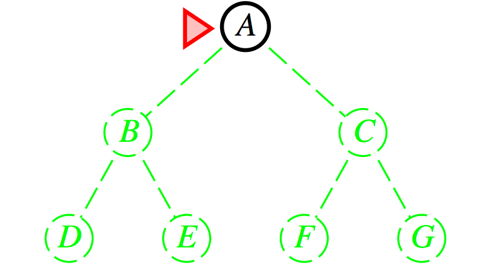
|

|
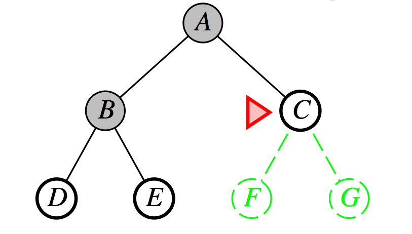
|
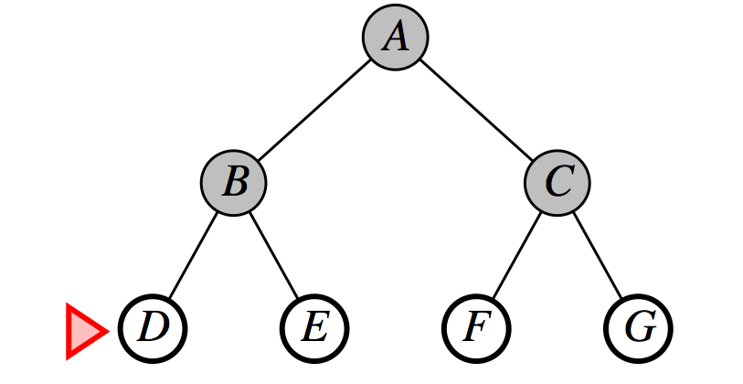
|
Evaluation
Time Complexity = b0
+ b2 + b3 + b4 and
so on = Θ(bd + 1)
nodes expanded if the solution is found at level d where each state has b successors.
Space Complexity (how much memory does it consume?) - Expensive as
all nodes in the frontier must be maintained in memory. Θ(bd)
Complete? (Assume finite branching factor.)
Optimal? (Assume each drop in level is the same cost.)
Depth-First Search
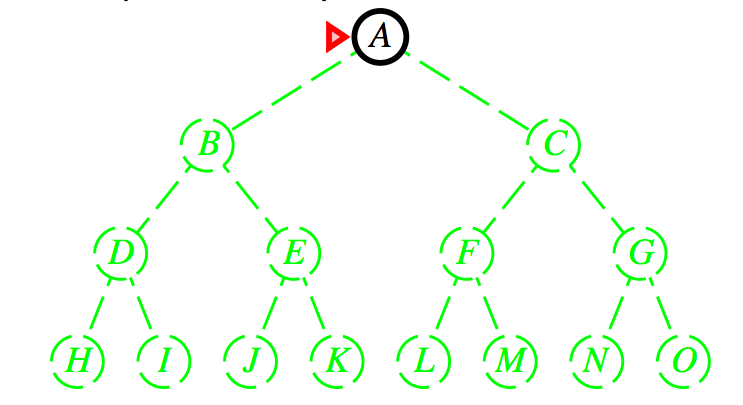
|
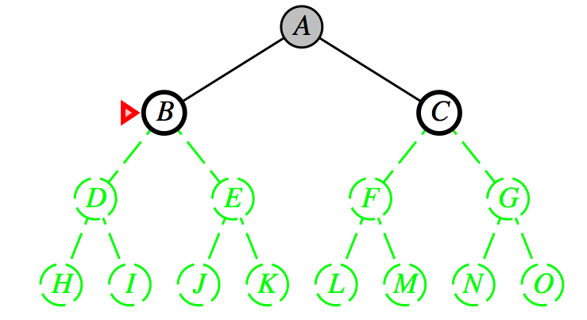
|

|
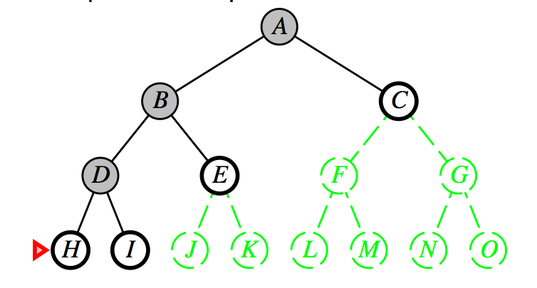
|
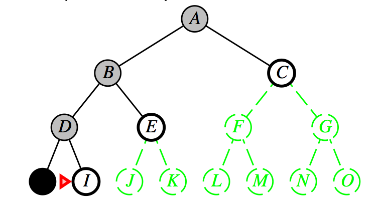
|
Limited memory requirements as nodes can be removed from memory as
soon as all descendants have been explored.
The space performance is the primary advantage of DFS over BFS.
Complete? (Consider if there is a cycle.)
Optimal? (Consider if there are two possible goals at different
levels.)
Data Structures?
Which data structure is used - stack or queue?
DFS?
BFS?
Uniform-Cost Search
When all step costs are equal, breadth-first search is optimal as it
always expands the shallowest (i.e. lowest cost) unexpanded
node. Uniform-cost search is a modified breadth-first that
expands the node with the lowest path cost. This algorithm is guided
by path costs rather than
path depths. (i.e. it is
more concerned with the cost of a path rather than the number of
steps in a path.)
Data Structure?
Complete?
Optimal?
Evaluation
Strategy
|
Complete
|
Optimal
|
BFS
|
?
|
?
|
DFS
|
?
|
?
|
Depth-Limited
|
?
|
?
|
Iterative Deepening
|
?
|
?
|
Uniform Cost
|
?
|
?
|
Informed Searches
So far our searches have been uninformed
because they can only generate and follow successors and
check if they are in a goal state. These searches have no ability to
determine if one path is more promising than another. The remaining
searches involve informed -
or heuristic - searches.
Best-Fit Searches
Best-fit searches operate by ordering nodes (the fringe) for
expansion based upon an evaluation function f(n).
The node with the lowest evaluation (i.e. cost) is selected for
expansion as f(n) typically represents the cost or
distance to the goal.
Heuristic Function
Best-fit searches further require a heuristic function h(n).
h(n) = estimated cost of
the cheapest path from node n to a goal node.
If n is
a goal node, then h(n) = 0.
|
What Does Heuristic Mean?
A heuristic
is "A rule of thumb, simplification, or educated
guess that reduces or limits the search for solutions
in domains that are difficult and poorly
understood."
>>> Heuristic
knowledge is useful, but not necessarily correct.
>>> Heuristic
algorithms use heuristic knowledge to solve a
problem.
>>> A heuristic
function here takes a state and returns an estimate
of the distance to the goal.
|
Example Heuristic Functions
Eight-Square
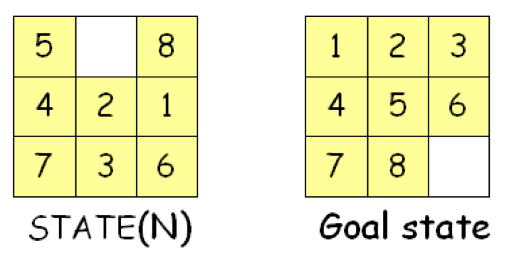
Possible heuristics:
h1(n) = The number of
misplaced numbered tiles
h1(n)
= 6
Or
h2(n) = Sum of the
Manhattan distance of every numbered tile to its goal position.
h2(n)
= 2 + 3 + 0 + 1 + 3 + 0 + 3 + 1 = 13
Note that h(n)
is independent of the search tree and only depends upon STATE(N) and
the goal.
Consider the following:
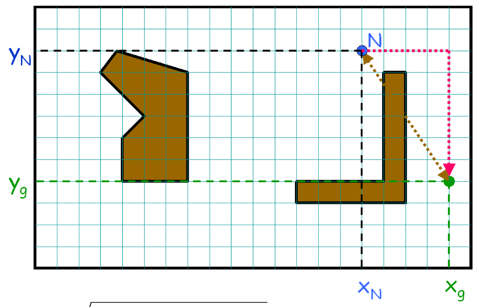
Possible Heuristics
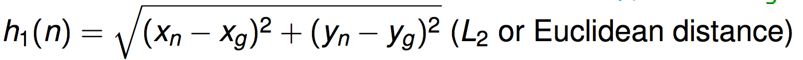
Or
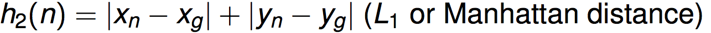
We will examine two best-fit searches, Greedy and A*
Greedy Search
This algorithm expands the node that is closest to the goal on the
assumption that this is likely to lead to the best solution.
Essentially
f(n) = h(n)
One Approach - Straight-Line
Distance as the heuristic:
h(n) =
straight-line distance from n to the goal. i.e. h(Arad) = 366,
and so forth.
Building the Search Tree
The initial state
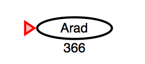
We then expand the node with the lowest-cost h(n) which
is Sibiu:
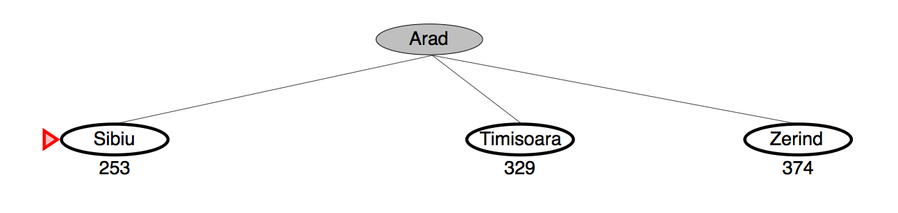
Followed by:
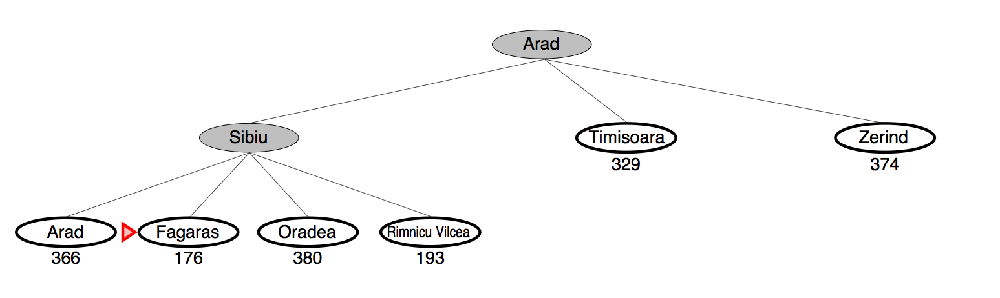
And so on to the goal:
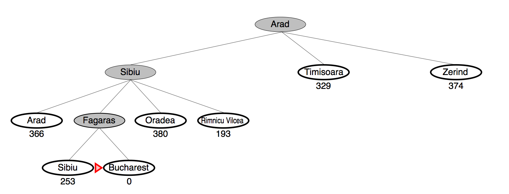
In-Class - Trace the operation of the best-fit search going
from Lugoj to Bucharest using the
straight-line distance heuristic.
Evaluation
Complete?
Not necessarily. Consider going from Iasi to Fagaras. We also have
to be careful of following paths infinitely.
Optimal? Is it?
Space & Time Complexity?
Worst case is same as depth-first search O(bm)
where b
is the branching factor and m is the maximum depth of anynode in
the tree. (Although this can be reduced by a good heuristic.)
A* Search
Pronouned A-star. Perhaps
the best-known AI algorithm!
Idea is to avoid paths that are already expensive.
The algorithm:
f(n) = g(n) + h(n)
where
g(n) = the cost to reach
node n.
h(n)
= the estimated cost to goal from n.
f(n)
= the estimated total cost of the path through n to the goal.
Building the Search Tree
*** h(n)
= straight-line distance from node n to the goal.
The initial state:
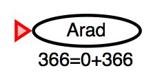
We then expand this state
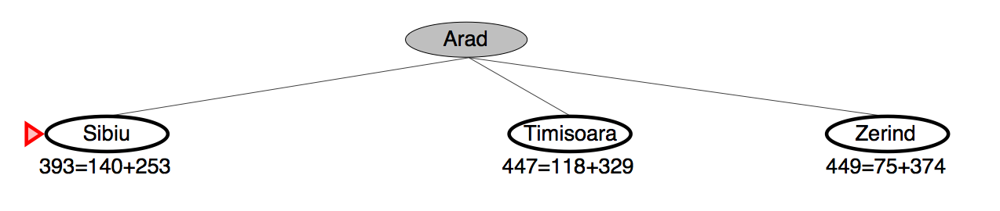
We then expand the node with the lowest cost of f(n)
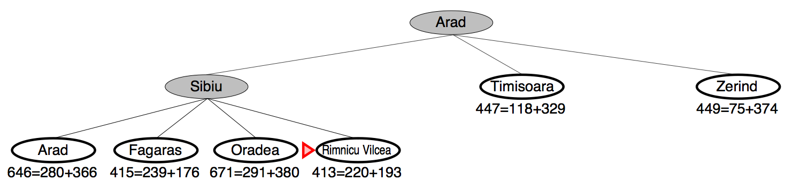
And so forth
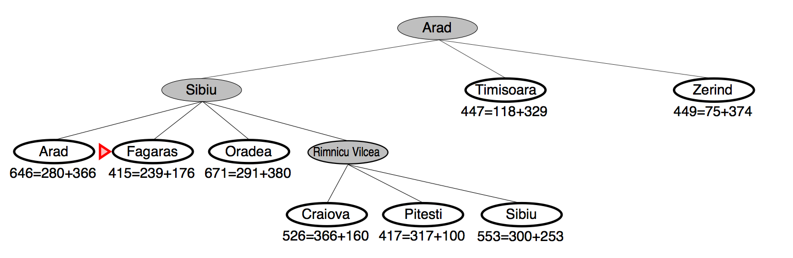
What is especially interesting about the following state?
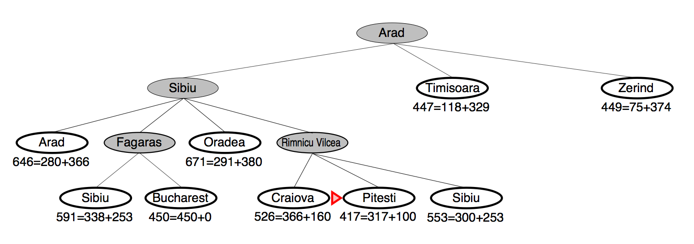
Finally
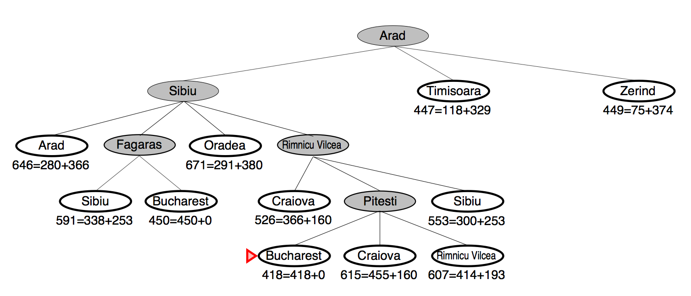
Evaluation:
The A* algorithm is (1) complete,
and (2) optimal (we shall
soon see a proof of this.)
In Class Exercise using
A* Search
Admissible Heuristics
An admissable heuristic
is
one where h(n)
never
overestimates the true cost of reaching the goal.
h(n) = straight-line distance from node n to the goal
an admissable heuristic?
|
Why It is Important to Not Overestimate the Cost
of Reaching the Goal
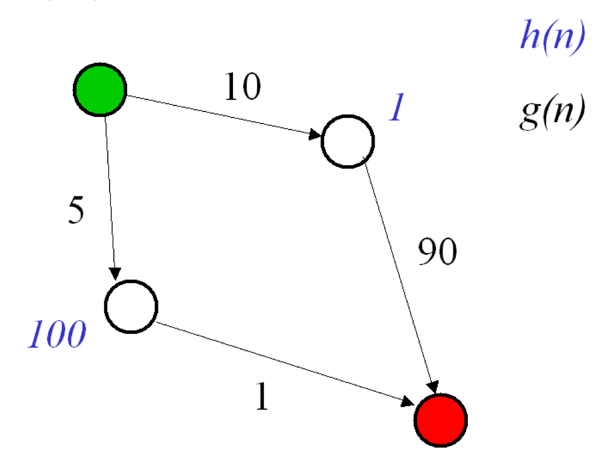
- This problem occurred because h(n) = 100 for a state whose actual cost to
the goal was 1.
- In other words, the heuristic h(n) greatly overestimated the cost of
getting to the goal.
|
Eight-Squares
Revisited
Possible heuristics:
h1(n) = The number of
misplaced numbered tiles
h1(n)
= 6
Or
h2(n) = Sum of the
Manhattan distance of every numbered tile to its goal position.
h2(n)
= 2 + 3 + 0 + 1 + 3 + 0 + 3 + 1 = 13
Are h1(n)
and/or h2(n)
admissible heuristics?
Think of an admissable heuristic as an optimistic guess at the cost of
reaching the goal.
|
If h(n) is admissable, A* using Tree Search is
Optimal
Suppose a suboptimal goal G2 has been generated
and appears on the frontier.
Let n be an
unexpanded node on a shortest path to optimal goal G.
Let C* be the
cost of the optimal solution
We have:
f(G2) = g(G2) + h(G2)
f(G2) = g(G2)
since h(G2) = 0
(this is true for any goal node.)
g(G2) > C*
since G2 is
suboptimal
So
f(G2) > C*
What about n?
f(n) = g(n) + h(n)
g(n) is the true
cost of getting to node n.
h(n) must be less
than or equal to the true cost of getting to the goal from
n since h(n) is admissible.
Thus,
f(n) = g(n) + h(n) <= C*
So
f(n) <= C* while f(G2) > C*
which yields
f(n) < f(G2)
So n will be
chosen for expansion before
G2.
|
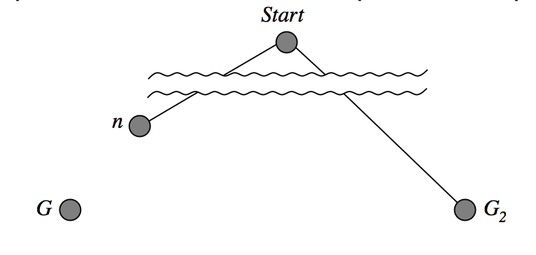
|